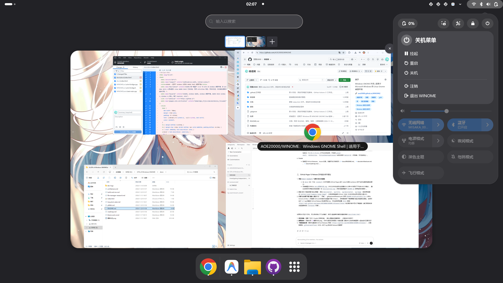

Activities 三态概览与 AppGrid
单按 Win 或热角进入窗口总览，550ms 内双击 Win 丝滑切入分页应用网格；支持 start2.bin 分组同步、Win32/UWP 即时搜索与跨虚拟桌面拖拽。
单进程原生宿主打造——零 DLL 注入，内置看门狗与任务栏自动恢复；完整接管顶栏、Activities 三态概览、AppGrid 与工作区交互。

点击放大预览以 GNOME Shell 视觉真源与 Windows 原生底层 API 协同驱动
单按 Win 或热角进入窗口总览，550ms 内双击 Win 丝滑切入分页应用网格；支持 start2.bin 分组同步、Win32/UWP 即时搜索与跨虚拟桌面拖拽。
复刻 St CSS 视觉管线，提供居中时钟、双栏 DateMenu（SMTC 媒体控制 + WinRT 通知中心）、Wlan 密码连接、WASAPI 音量、亮度与蓝牙控制。
按显示器独立计算 DPI 与工作区预留；全屏游戏/视频自动隐藏所在屏顶栏与热角；兼容经典 ToolbarWindow32 与 Win11 XAML 第三方托盘。
全程无 DLL 注入；启动即建立 recovery.dat 快照与独立 --watchdog 看门狗，异常退出自动恢复系统原生任务栏与桌面工作区，另附 --restore 急救命令。
Win+Tab 映射为打开开始菜单，Win+PageUp/Dn 切屏/移窗；Win+V 剪贴板、Win+E、Win+Shift+S 等系统快捷键通过单次 SendInput 原子透传，互不冲突。
内置 Alt+F2 运行弹窗、5 页 Looking Glass 调试台、非提权 winome-ctl.exe 及 Job Object 隔离的 stdio JSON 插件宿主机（异常自动熔断保护）。
切换下方标签查看快捷键、便携运行注意事项或 MSYS2 构建命令
下载 WINOME-win64-portable.zip 并解压到任意可访问目录，内置全部 GTK4/GLib 运行时与图标，无需额外安装依赖。
运行 winome.exe 会请求管理员权限，用于隐藏原生任务栏并稳定访问 Explorer / 虚拟桌面 COM；常规配置、日志与转储均存于 %LOCALAPPDATA%\WINOME\。
点击电源菜单 Quit WINOME 正常退出；如遇意外终止，看门狗会自动还原任务栏，或随时运行包内急救脚本恢复工作区。
winome.exe --restore # 立即恢复 Windows 原生任务栏与顶部工作区（包内亦附 restore-taskbar.bat）
winome.exe --safe-mode # 安全模式启动（跳过外置插件与窗口外观统一）
winome-ctl.exe 可在普通终端内通过 User-SID 加固管道发送 status、overview.toggle 等控制指令。
# 在 MSYS2 UCRT64 终端下执行（非纯英文用户名建议指定 WINOME_TMP 为 ASCII 路径）
WINOME_TMP='C:\tmp_winome' ./build.sh release
meson test -C WINOME/build --print-errorlogs
./WINOME/package.sh --no-build
清晰透明的许可证边界、CI 自动化验证与架构设计文档
WINOME 主体遵循 GPL-2.0-only（virtual-desktop 模块兼容 MIT）。所有源码均带有清晰的 SPDX 标识并在 GitHub Actions CI 上持续通过单测、CSS 属性覆盖门禁与便携包 ldd 依赖闭包检测。界面设计参考了 GNOME Shell 与 WinOverview，虚拟桌面兼容思路移植自 VirtualDesktopAccessor，原生任务栏隐藏思路受 Seelen-UI 启发并完全独立重写（无外部 AGPL 代码派生）。